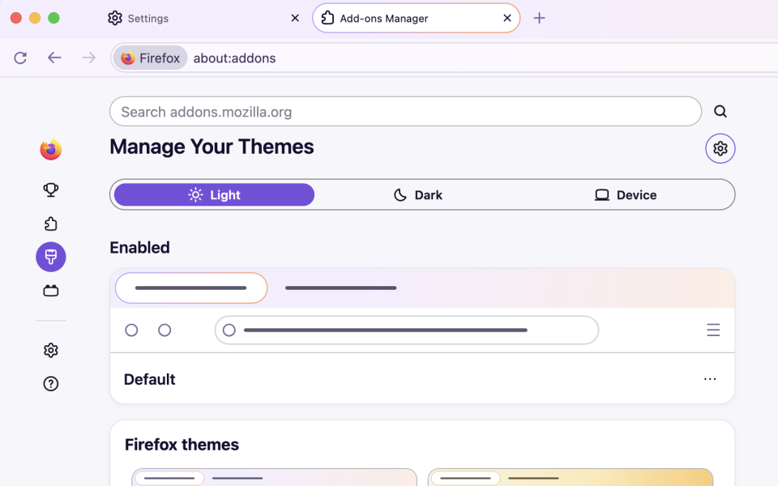
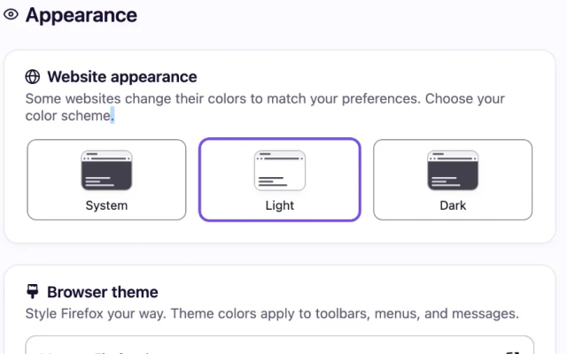
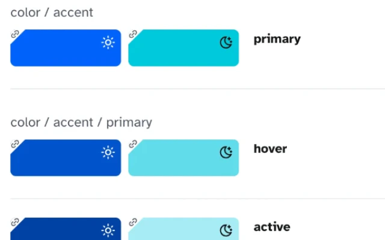
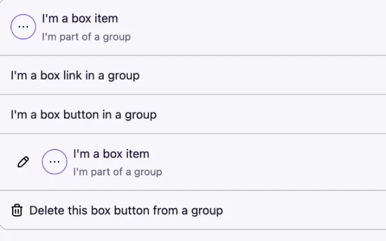
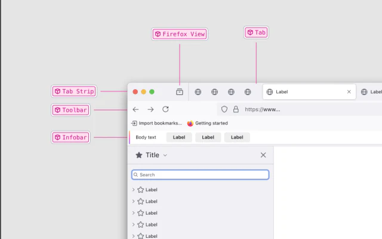
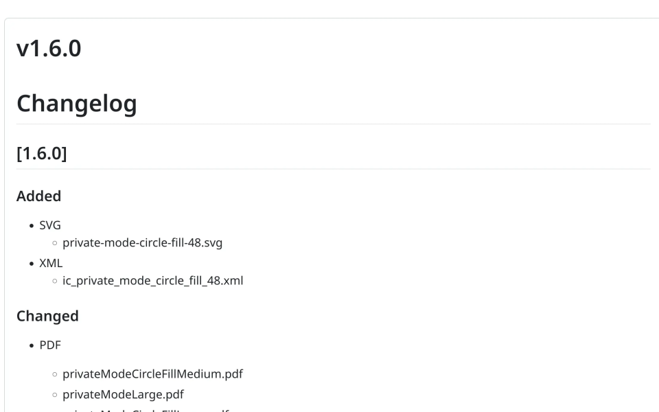
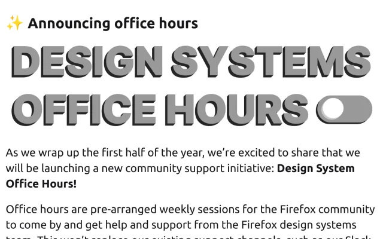

I'm a staff design technologist at Mozilla. I co-founded Firefox's design system, Acorn, and I've led it ever since, in Figma and in code.
Firefox Nova Redesign
Nova shipped in Firefox 157 in September 2026, about seven months after engineering started landing it. The release notes call it Firefox's biggest visual refresh in years, built with our updated design system. I guided teams like Search, Privacy, VPN, and Credentials through token and component replacement by coaching, reviewing code, and unblocking engineers and designers. I also tokenized parts of the app myself, including Search, and designed the theme picker alongside our lead designer. By launch, component usage had nearly doubled and token coverage went from about 40% to over 60%.

Firefox Settings Redesign
I led the modernization and redesign of Firefox Settings, which shipped in Firefox 152 in June 2026 with a new look, clearer groupings, and easier navigation. It's built entirely with Acorn's reusable components and patterns.

Design Tokens
I wrote and landed our first design tokens and built them in three tiers: base, application, and component. Style Dictionary turns one JSON file into both Figma variables and CSS. Android and iOS modeled their tokens on the architecture I led, and I run a token work group where mobile engineers get guidance. Today about 70% of Firefox's stylesheet values use tokens, up from under 1% in 2023.

Storybook & Web Components
I went out of my way to find an engineering partner, and together we started Acorn's Storybook and web components library. I plan the roadmap, review the work, and land fixes and improvements. In 2023 we had 3 components used 10 times. Now there are 34, used over 1,000 times across Firefox.

Figma Libraries
I established Firefox's official component and style libraries in Figma and kept them in sync with what shipped in code.

Icon Package
I set up Acorn's icon package and its release process, which delivers icons to both Figma and code. It's shipped 500+ icons across 170+ releases since 2023.

AI Workflows
I built AI workflows that keep our changelog current and catch drift across Figma, Storybook, and docs. At UX leadership's request, I also created Firefox UX Hub, a shared home for AI skills across research, design, content, and design systems. I wrote its design systems skill and built a prototype of our design system that designers use in Claude Design and beyond.
Docs & Advocacy
I co-created Acorn's documentation site and have written 12 issues of our newsletter since 2021. We're a remote team, so I lead weekly coworking sessions and take turns hosting office hours. I also give talks about the system at work weeks and on company-wide calls, and for a while I ran a design systems meetup for all of Mozilla.
